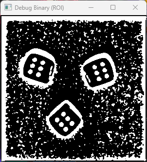
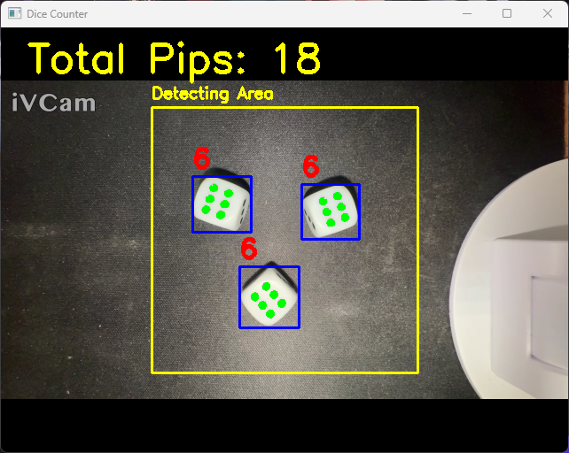

專題報告：基於機器視覺之即時骰子辨識系統
1. 檢測物件 (Item 1)
本專案致力於實現一個低延遲、高穩定性的即時骰子點數統計系統。系統的眼睛是一顆標準的攝像頭，目標物則是市面上常見的六面骰子。

圖 1-1：檢測目標 - 具有點數組合的標準骰子
- 物理環境：系統要求骰子必須放置於畫面中央的黃色 ROI（Region of Interest）區域內（300x300 像素），以確保骰子能佔據足夠的像素面積，提高辨識準確率。
2. 檢測方法 (Item 2)
本專案純粹使用OpenCV（Python）的形態學與幾何特徵分析技術，未引入複雜的深度學習模型，以達到在低運算資源設備上（如老舊平板、行動裝置）也能流暢執行的目的。

圖 2-1：核心方法論 - 從像素到特徵
3. 檢測流程 (Item 3)
影像處理的核心 Pipeline 如下，我們展示了從原始畫面到二值化後的特徵分離過程：
 1. 灰階化 (Grayscale)
1. 灰階化 (Grayscale)
去除顏色資訊，只保留亮度，降低數據量。
 2. 模糊 (Blurred)
2. 模糊 (Blurred)
使用 7x7 高斯核去噪，消除骰子表面的微小雜點。

3. 二值化 (Threshold)反轉黑白影像，點數與邊界變為白色，背景變黑色。
在二值化後，程式碼會執行 cv2.findContours，將這些白色區塊提取為數學輪廓。
4. 影像處理關鍵技術 (Item 4)
此專案中最關鍵的兩個技術突破點：
技術一：圓度過濾 (Circularity)

為了精準區分「骰子本體（正方形）」與「點數（圓形）」，系統計算輪廓的圓度：
圖 4-1：幾何篩選 - 當圓度 > 0.45 才判定為點數
技術二：層級分析 (Hierarchy)

利用 cv2.RETR_TREE 模式，系統會建立一個輪廓樹。如果一個白色區塊（點數）的父輪廓被判定為「骰子」，則該區塊的點數統計才成立。
圖 4-2：層級關係 - 綠色（子倫廓）位於藍色（父倫廓）內部
5. 檢測結果 (Item 5)
系統成功達成即時多目標偵測，不僅能準確計算單顆骰子，更能即時累加總點數。下方展示了系統在實際運作時的畫面反饋：

圖 5-1：實時檢測畫面 - 包含藍框、綠色點數填充、紅色數字統計
6. 專題應用與挑戰 (Item 6)
本專題的演算法可延伸至工業上的圓孔品管檢測。在開發過程中，最大的技術難題在於：
- 光影與陰影：當光線從側面打過來，骰子邊緣會產生深色陰影，二值化後常會被誤判為額外的點數。
- 解決方案：動態調整
cv2.adaptiveThreshold中的 C 值（常數），以及設定MAX_PIP_AREA為骰子本體面積的 1/20，成功排除了過大的陰影噪點。
8. 心得與貢獻 (Item 8)
從這個專案中，我學習到除了理論上的演算法外，實際硬體環境的架設（光線、角度）同樣關鍵。貢獻在於開發了一個輕量化、低負載的視覺偵測核心，並成功結合前端網頁技術進行展示。